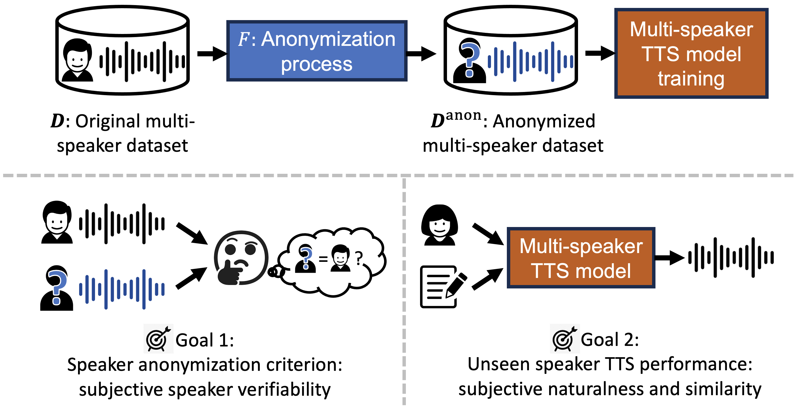
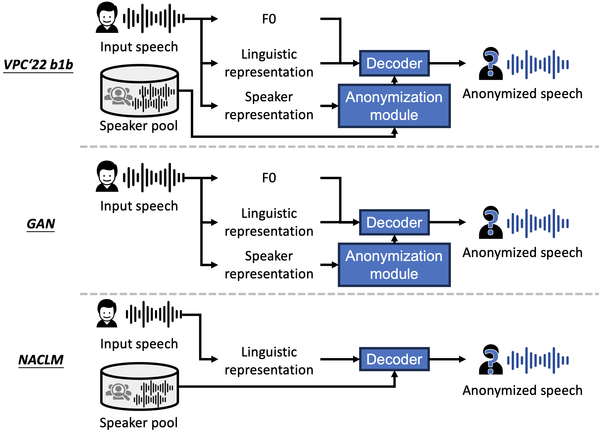
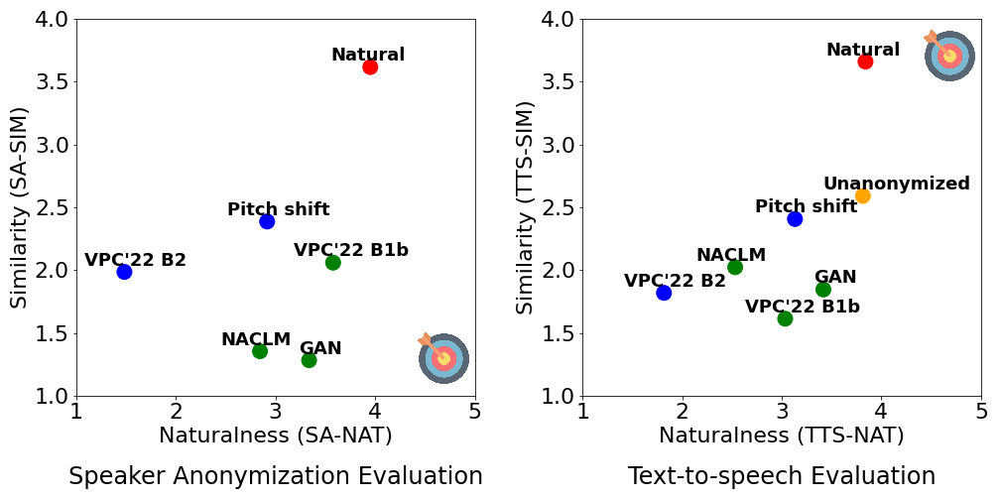

Abstract: The trend of scaling up speech generation models poses a threat of biometric information leakage of the identities of the voices in the training data, raising privacy and security concerns.
In this paper, we investigate training multi-speaker text-to-speech (TTS) models using data that underwent speaker anonymization (SA), a process that tends to hide the speaker identity of the input speech while maintaining other attributes.
Two signal processing-based and three deep neural network-based SA methods were used to anonymize VCTK, a multi-speaker TTS dataset, which is further used to train an end-to-end TTS model, VITS, to perform unseen speaker TTS during the testing phase.
Extensive objective and subjective experimental evaluation results suggest that no single SA system dominates all the evaluation metrics.
More importantly, we found that UTMOS, a data-driven subjective rating predictor model, and GVD, a metric that measures the gain of voice distinctiveness, are good indicators of the downstream TTS performance, which can help researchers determine the goodness of the SA system for multi-speaker TTS training.



Problem formulation and goals
DNN-based methods
Scatter plot of the subjective evaluation results.
Experiment 1: Evaluating the speaker anonymized training data
Compared systems
Natural: Natural speech before speaker anonymization.
Signal processing based methods:
Pitch shift
VPC'22 B2
Deep neural network based method:
VPC'22 B1b
GAN
NACLM
Speech Samples
System
p227_001 (male)
p240_010 (female)
p259_026 (male)
p295_027 (female)
Please call Stella.
People look, but no one ever finds it.
Smoking is also very important.
However, the following year the cancer returned.
Natural
Pitch shift
VPC'22 B2
VPC'22 B1b
GAN
NACLM
Experiment 2: Evaluating multi-speaker TTS models trained with speaker anonymized data
Compared systems
Natural: Natural speech before speaker anonymization.
Unanonymized: TTS model trained with unanonymized speech.
Signal processing based methods:
Pitch shift
VPC'22 B2
Deep neural network based method:
VPC'22 B1b
GAN
NACLM
Speech Samples
System
p225_298 (female)
p245_323 (male)
p248_344 (female)
p302_277 (male)
It was deployed in the Gulf War.
I saw some good things.
They say that vital evidence was not heard in court.
This is not, however, a General Election reshuffle.